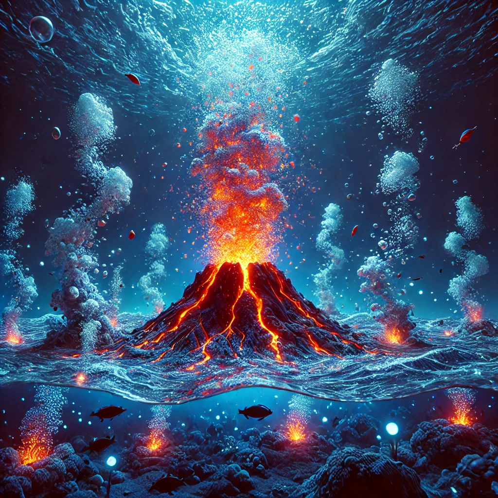
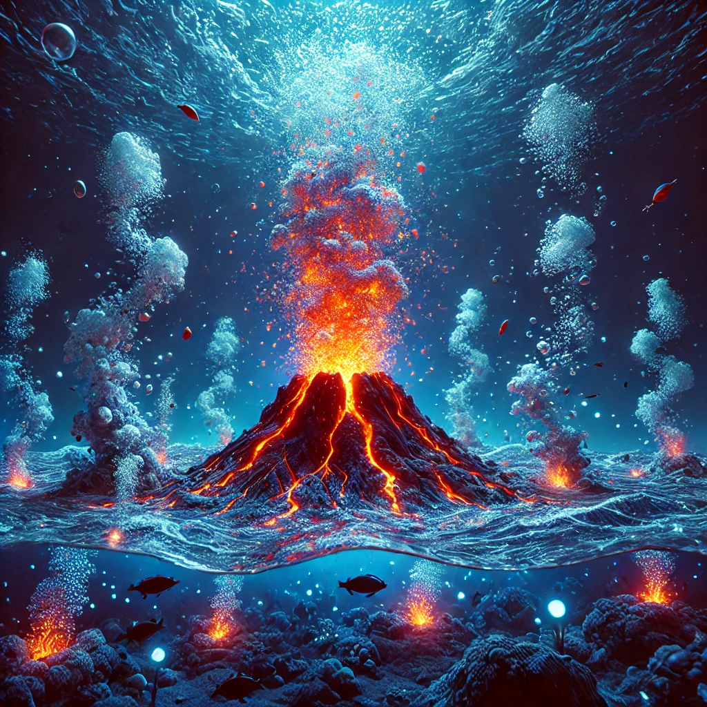

Underwater Volcanoes
Underwater volcanoes, or seamounts, are geological wonders that play a crucial role in shaping the ocean floor. These volcanic eruptions can create new islands and support unique ecosystems.
The Largest Underwater Volcano
Tamu Massif, located in the northwest Pacific Ocean, is the largest underwater volcano and one of the largest single volcanoes on Earth. Covering an area roughly the size of New Mexico, it formed about 145 million years ago. Unlike traditional volcanoes, Tamu Massif has a gently sloping profile, spreading lava over vast distances.
Although it is now extinct, its immense size and formation provide valuable insights into volcanic activity and the geological processes of the ocean floor.
 
